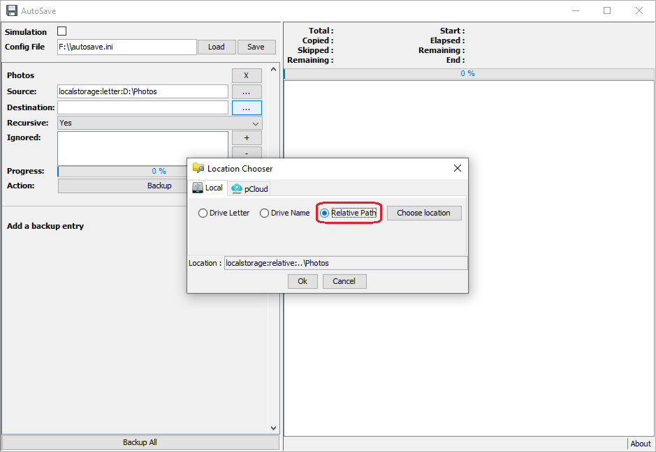

1 / 42
At first run, nothing is configured.
2 / 42
To configure a new folder or file to backup, use the + button.
3 / 42
A new empty entry is created.
4 / 42
Click on the ... button of the source line to define a new folder to backup.
5 / 42
It will popup an helper window to configure a new location (by default it's the current folder).
6 / 42
Use the Choose location button to select a new folder to backup.
7 / 42
Here I've selected my "Photos" folder to backup. Click on the Ok button to set this source. It will close the helper popup windows.
8 / 42
The source location is defined.
Note that the display name of the entry, is the name of the selected source directory (here it's "Photos").
9 / 42
Click on the ... button of the destination line to define the location where to backup your source.
10 / 42
As from source, it popup an helper window to configure a new location.
11 / 42
Use the Choose location button to select a new destination folder where to save your source folder.
12 / 42
Here I've choosen the root of my USB key, which is on F: letter.
13 / 42
The problem with removable usb disk, is that the next time you plug it, it can be assigned to another drive letter.
To overcome this problem, you can choose to define the drive location by its Drive Name.
14 / 42
Click on the Ok button to set this destination. It will close the helper popup windows.
15 / 42
The source location is defined.
16 / 42
You can defined to include or not sub folders into the backup by select the Yes/No value of the Recursive option.
17 / 42You can also define to exclude some file or folder to the backup. As it's based on
regular expression which can be complex to define, an helper builder must be used by clicking on the
+ button.
18 / 42
In the helper window you can use the 2 first input to build the regular expression which will be displayed in the third input.
You can also directly type your own expression into this third input.
19 / 42
Here I've used the 2 first input to ask to exlude all files with extension .bmp into a subfolder named test.
Note that the corresponding regular expression can be hard to understand.
20 / 42
As you can type your own regular expression directly in the third input, you can select a file to test the expression by selecting it with the ... button.
21 / 42
Here is the result of a corresponding file.
22 / 42
And here is the result of a not corresponding file (the bmp file is not into a "test" subfolder).
23 / 42
Then click on the Ok button to add the regular expression to the list of ignoring expression.
24 / 42
Here I've defined only bmp files to be excluded.

25 / 42
You can obviously defined multiple expressions to be ignored.
26 / 42
You can remove an expression by selecting it and click on the - button.
27 / 42
You can add a nice icon in front of the name, by clicking on the name.
28 / 42
It will popup a file chooser, to select a 16x16 image.
29 / 42
Here is my beautifull Photos entry with its icon.
30 / 42
Here I've added a new backup entry, and use the Location Chosser to define the destination.
I use it to define my pCloud location.
You can select if your pCloud storage is in Europe or USA, and select the http protocol to use (recommanded to be https).
31 / 42
Once all is defined, you can run a backup for only one entry by using the Backup button bellow it.
32 / 42
Or to run the backup for all entries (one by one iteratively) by using the general Backup All button at the bottom of the window.
33 / 42
Here I've run the backup of the first entry (from my HDD to my USB Key).
We can notice that one file is ignored (image.bmp) as it matched the ignored regular expression .*\.bmp.
Another file (P100003.JPG) is skipped (i.e. not saved again) because it's already saved in the destination (destination modification date is greater or equal than the source modification date).
34 / 42
When running for an online service which required authentication, it displays a login window.
Note that the login/password you will input are never saved anywhere for security reason.

35 / 42
As for the previous usb copy, it backup file by ignoring the ones which matched an ignored regepx.
36 / 42
Running again the backup on pCloud, still ignored the bmp file; but also skip all files as they are alredy copied previously (and the modification date didn't change).
37 / 42
Don't forget to save your configuration, with the Save button at the top of the window. In case of any modification, when you close the program, it will ask if you want to save it.
Tip: The program tries to load the "autosave.ini" file by default.
38 / 42
Another way to use this tool, is to place it on an USB Key to save your computer's files on this USB Key.
Here I will use it to save my compyter Photos folder to be saved on the Photos folder on this usb key.
39 / 42
Here I've selected the Photos for the destination directory. By default it used the driver letter as identifier.
As previously said, this letter is dynamic and can be not the same in the future.

39 / 40
Use the Relative Path option to defined the path folder relatively of the AutoSave.jar tool.
41 / 40
Running the backup will copy all file according the relative path destination.
42 / 40
And the copy result.
 pCloud
pCloud